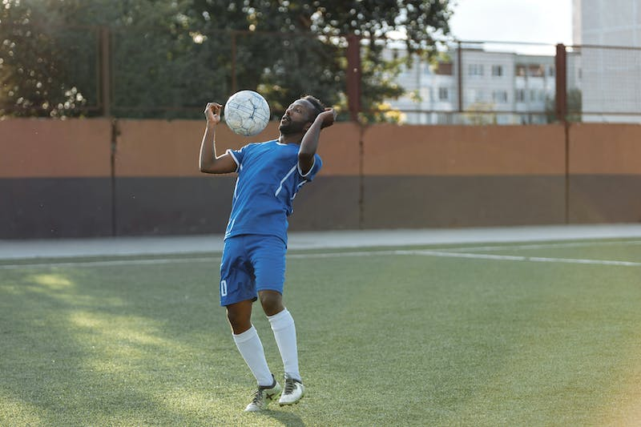
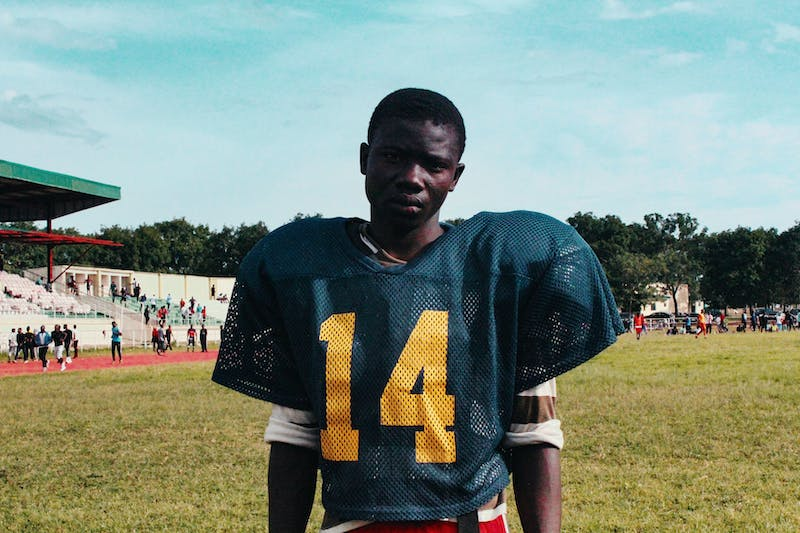

1st July 2023
BASKETBALL: AMIHERE DRAFTED INTO THE WNBA
Laeticia Amihere has become the first player of Ghanaian descent to be drafted into the Women's National Basketball Association (WNBA). She was selected eighth overall into the American professional basketball league by the Atlanta Dream in the first round of the draft.
Amihere was born to a Ghanaian father and an Ivorian mother, and started her college basketball career at South Carolina Gamecocks in the Southeastern Conference.
Amihere’s WNBA draft pick comes after she helped South Carolina Gamecocks beat the University of Connecticut to win the NCAA national championship in 2022.
2nd July 2023
FOOTBALL: SAMED SHINES IN FRANCE

Black Stars midfielder, Abdul Samed Salis has been named in L'Equipe's Ligue 1 team of the first round. The RC Lens midfielder has been in scintillating form for the club, since joining them in the summer transfer window from Clermont Foot. The 22-year-old has missed only one game in the first round, playing a key role in his team being second behind Paris Saint-Germain in the French league.
Salis has been an integral member of Lens' squad this season, making 18 appearances in Ligue 1 this season. He was a member of Ghana's squad at the World Cup in Qatar.
Earlier, Sports Brief reported on Salis having to make reference to Michael Essien and Sulley Muntari, to give his mother an idea of what playing at the World Cup meant. The RC Lens midfielder was selected for the tournament in Qatar, despite making just a single appearance for the national team prior to the World Cup.
2nd July 2023
RUGBY: GHANA RUGBY ON THE RISE

Black Stars midfielder, Abdul Samed Salis has been named in L'Equipe's Ligue 1 team of the first round. The RC Lens midfielder has been in scintillating form for the club, since joining them in the summer transfer window from Clermont Foot. The 22-year-old has missed only one game in the first round, playing a key role in his team being second behind Paris Saint-Germain in the French league.
Salis has been an integral member of Lens' squad this season, making 18 appearances in Ligue 1 this season. He was a member of Ghana's squad at the World Cup in Qatar.
Earlier, Sports Brief reported on Salis having to make reference to Michael Essien and Sulley Muntari, to give his mother an idea of what playing at the World Cup meant. The RC Lens midfielder was selected for the tournament in Qatar, despite making just a single appearance for the national team prior to the World Cup.
2nd July 2023
FOOTBALL: ALICE SHINES IN EUROPE
Black Stars midfielder, Abdul Samed Salis has been named in L'Equipe's Ligue 1 team of the first round. The RC Lens midfielder has been in scintillating form for the club, since joining them in the summer transfer window from Clermont Foot. The 22-year-old has missed only one game in the first round, playing a key role in his team being second behind Paris Saint-Germain in the French league.
Salis has been an integral member of Lens' squad this season, making 18 appearances in Ligue 1 this season. He was a member of Ghana's squad at the World Cup in Qatar.
Earlier, Sports Brief reported on Salis having to make reference to Michael Essien and Sulley Muntari, to give his mother an idea of what playing at the World Cup meant. The RC Lens midfielder was selected for the tournament in Qatar, despite making just a single appearance for the national team prior to the World Cup.